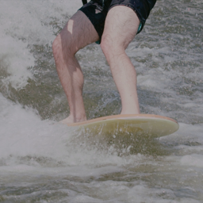
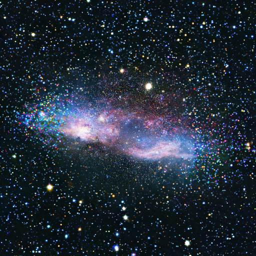

Previously, I received my Master's degree from ETH Zurich, working in the CVG lab. I have also interned at Meta, Adobe Research, and Google Research during summer times.
I am broadly interested in generative media, and how to use genAI techniques to help visual story telling in real world applications.
When I am not doing research, I play tennis.
I am currently on the job market, and are interested in positions related to video generation.
How Animals Dance (When You're Not Looking) Xiaojuan Wang, Aleksander Holynski, Brian Curless, Ira Kemelmacher, Steve Seitz
arXiv Preprint, 2025 project page
/
arXiv
Starting from a small set of generated keyframes, e.g., a marmot in various poses, our method generates an animal dance video that follows a specified choreography pattern, extracted from a reference dance video.

Generative Inbetweening: Adapting Image-to-Video Models for Keyframe Interpolation Xiaojuan Wang, Boyang Zhou, Brian Curless, Ira Kemelmacher, Aleksander Holynski, Steve Seitz
ICLR, 2025 project page
/
arXiv
Given a pair of key frames as input, our method generates a continuous intermediate video with coherent motion by adapting a pretrained image-to-video diffusion model.

Generative Powers of Ten Xiaojuan Wang, Janne Kontkanen, Brian Curless, Steve Seitz, Ira Kemelmacher, Ben Mildenhall, Pratul P. Srinivasan, Dor Verbin, Aleksander Holynski
CVPR, 2024 (Highlight) project page
/
arXiv
Given a series of prompts describing a scene at drastically varying scales, our method creates a seamless zooming video.
Jump Cut Smoothing for Talking Heads Xiaojuan Wang,
Taesung Park, Yang Zhou, Eli Shechtman, Richard Zhang
arXiv Preprint, 2023 project page
/
arXiv
Given a talking head video, we remove the the filler words, repetitive words and so on, and create a seamless transition for the jump cut.
Some Challenging Projects I Explored
• Photorealistic NBA2K;Xiaojuan Wang, Brian Curless, Ira Kemelmacher, Steve Seitz
TL;DR: Given a synthetic NBA2K game video (left), we turn it into a corresponding real NBA video (Right), i.e., the court and all players have realistic appearances. Challenge: we do not have such video pairs to directly learn the translation.
Earlier Works
• Learning 3D semantic reconstruction on octrees (GCPR 2019); Xiaojuan Wang, Martin Oswald, Ian Cherabier, Marc Pollefeys
• Supervised quantization for similarity search (CVPR 2016);
Xiaojuan Wang, Ting Zhang, Guo-Jun Qi, Jinhui Tang, Jingdong Wang
• Multi-scale learning for low-resolution person re-identification (ICCV 2015);
Xiang Li, Wei-Shi Zheng, Xiaojuan Wang, Tao Xiang, Shaogang Gong
• Cross-scenario transfer person reidentification (TCSVT 2015); Xiaojuan Wang, Wei-Shi Zheng, Xiang Li, Jianguo Zhang
Miscellanea
My first name in Chinese is 小鹃，which means "a little cuckoo bird". You can call me "jeanne".
I travel a lot, and enjoy spending time in the musuem.
{kind=link}